Royaume d'Haremcia
Les possessions domestiques .
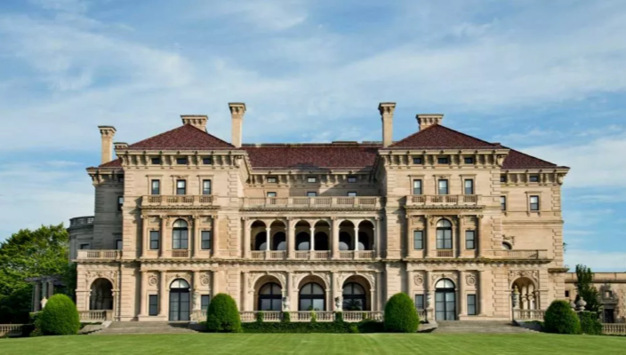
Extérieur du Manoir impérial (Le Manoir d'Estampes)
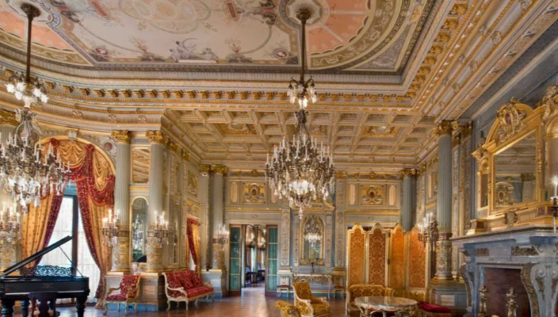
Intérieur d'un des nombreux salons du manoir
Impératrice suprême
Alysia est l'impératrice d'Haremcia, un titre qu'elle porte avec autorité.
Sa gouvernance est marquée par son intelligence stratégique.
Elle est respectée non seulement pour sa position de pouvoir, mais pour être sans pitié quand il le faut.
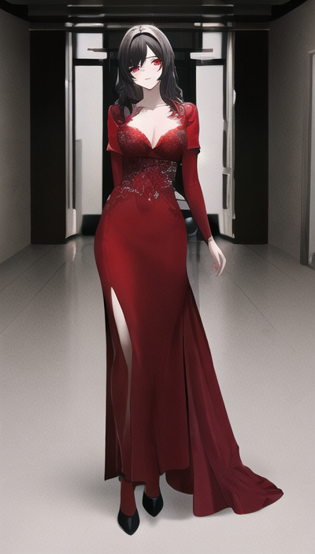
Impératrice, robe de cérémonie
Nom : Alysia
Qualités :
Défauts :
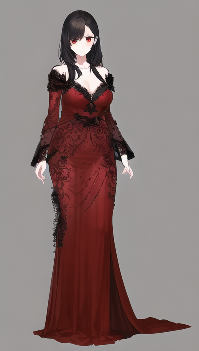
Impératrice, tenue de bal
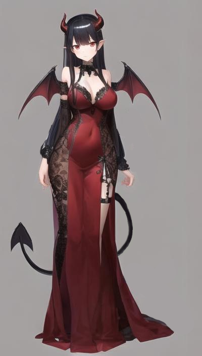
Impératrice, après infection démoniaque
Diplomate (1)
Aurora occupe le rôle de messagère diplomate pour le compte d'Haremcia.
Elle jouit de la plus haute estime de l'impératrice, qui lui confie des missions d'une grande importance et responsabilité.
Son caractère peut parfois être complexe, voire insolent dans les situations difficiles.
À sa demande auprès de l'impératrice, elle dispose de sa propre voiture dédiée à ses missions diplomatiques.
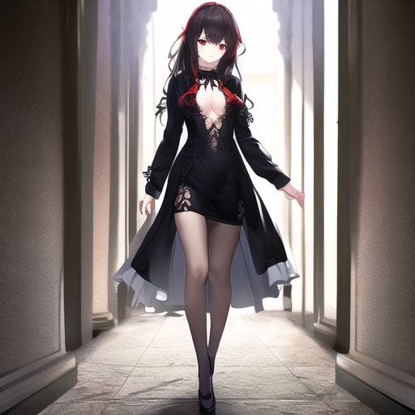
Diplomate pour Haremcia depuis plusieurs années
Nom : Aurora
Qualités :
Défauts :
Dames du bonheur (3)
Les Dames du Bonheur sont des travailleuses dédiées au service exclusif du directeur lui-même.
Elles ont bénéficié d'un entraînement intensif spécialement adapté à leurs fonctions.
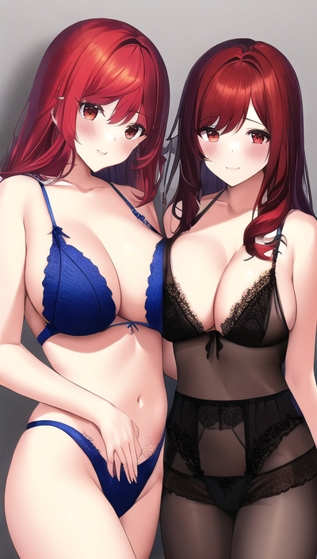
On a toujours dis que c'était plus fun à deux
👁️🗨️
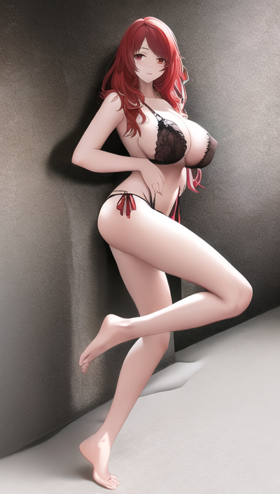
Une grande capacité d'adaptation a toutes les situations
👁️🗨️
Dames louves (4)
Les Dames Louves sont des travailleuses dédiées au service exclusif du directeur lui-même.
Elles ont bénéficié d'un entraînement intensif spécialement adapté à leurs fonctions.
Originaires d'une contrée où les femmes possèdent des attributs de loups, telles que des queues et des oreilles propres à cette espèce.
Elles ont aussi un comportement plutôt dominateur et des fois violentes.
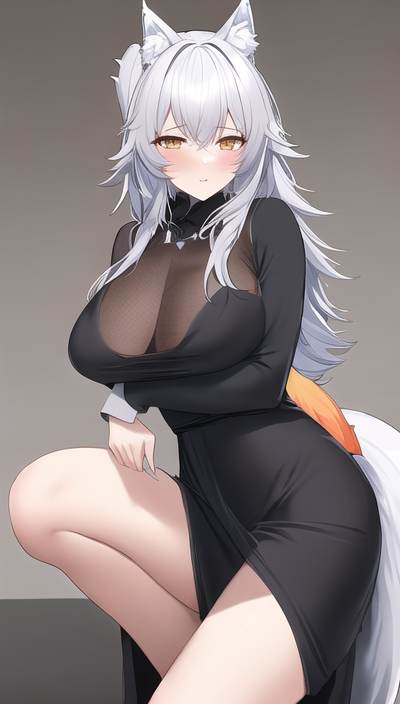
Cela paraît trompeur, mais c'est extrêmement doux
👁️🗨️
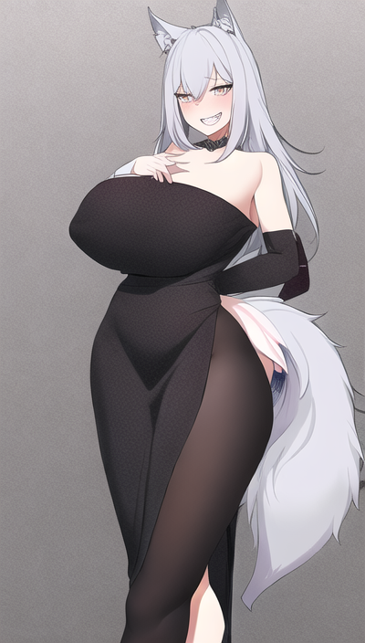
Cela paraît trompeur, mais c'est extrêmement doux
👁️🗨️
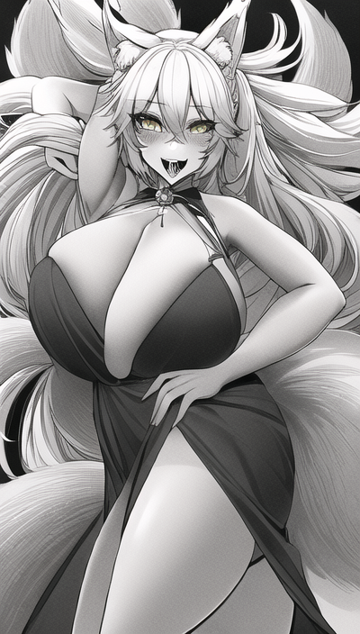
Cela paraît trompeur, mais c'est extrêmement doux
👁️🗨️
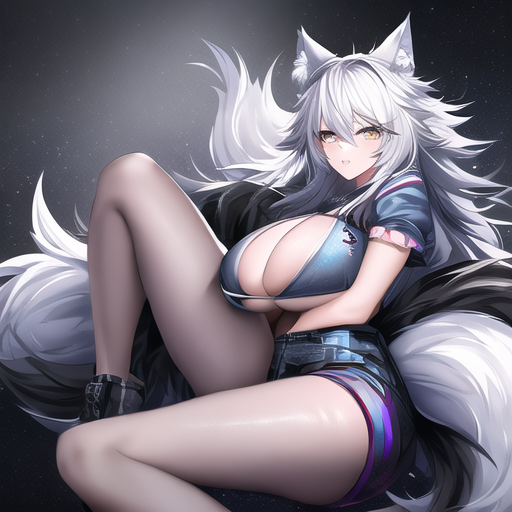
Cela paraît trompeur, mais c'est extrêmement doux
👁️🗨️
Dames chattes (3)
Les Dames Chattes sont des travailleuses dédiées au service exclusif du directeur lui-même.
Elles ont bénéficié d'un entraînement intensif spécialement adapté à leurs fonctions.
Originaires d'une contrée où les femmes possèdent des attributs de chats, telles que des queues et des oreilles propres à cette espèce.
Elles ont aussi un comportement docile et très peu rythmé, elles adorent dormir et le contact.
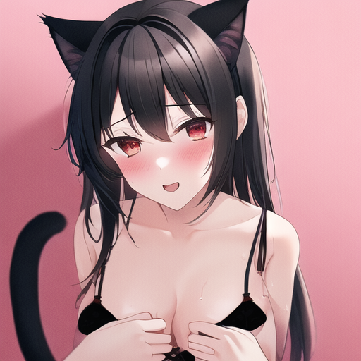
Une maîtrise parfaite et très expérimentée de leur langue.
👁️🗨️
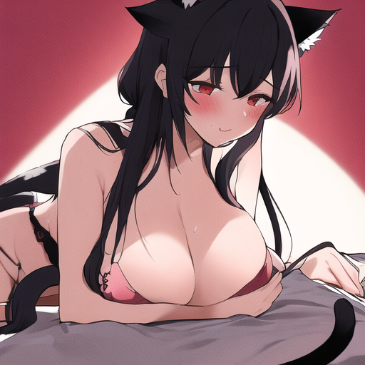
Une maîtrise parfaite et très expérimentée de leur langue.
👁️🗨️
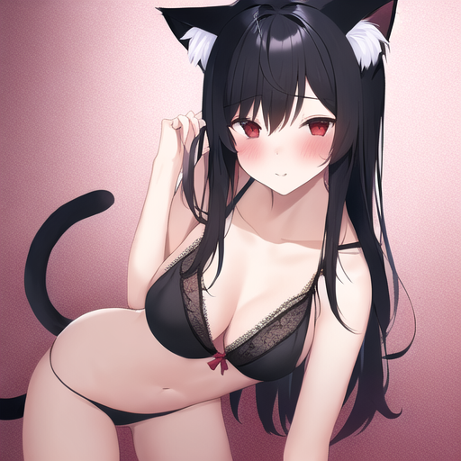
Une maîtrise parfaite et très expérimentée de leur langue.
👁️🗨️
Dames renardes (5)
Les Dames Renardes sont des travailleuses dédiées au service exclusif du directeur lui-même.
Elles ont bénéficié d'un entraînement intensif spécialement adapté à leurs fonctions.
Originaires d'une contrée où les femmes possèdent des attributs de renards, telles que des queues et des oreilles propres à cette espèce.
Elles ont aussi un comportement rusé, n'hésitant pas à manipuler ou jouer sur les mots pour avoir ce qu'elles veulent.
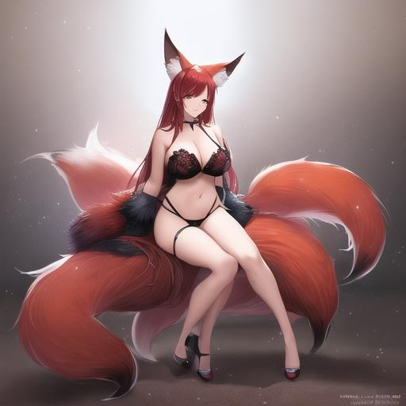
Sacré corps ça c'est sûr, et d'une douceur...
👁️🗨️
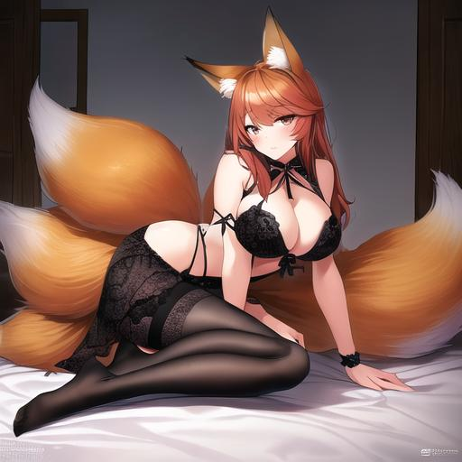
Sacré corps ça c'est sûr, et d'une douceur...
👁️🗨️
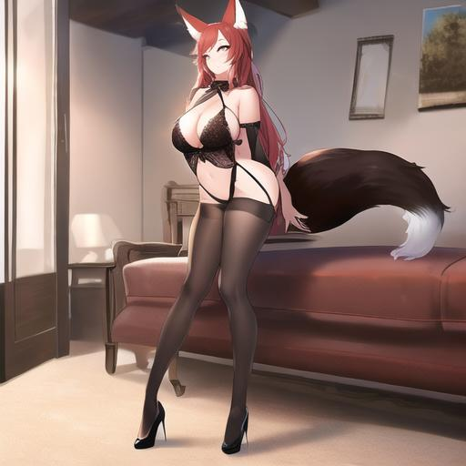
Sacré corps ça c'est sûr, et d'une douceur...
👁️🗨️
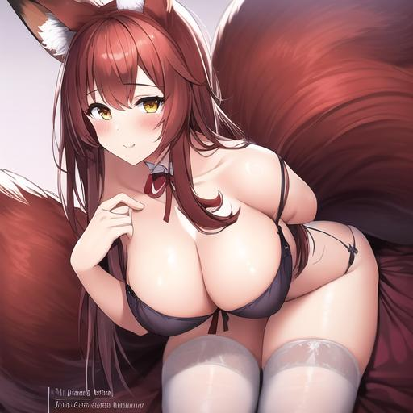
Sacré corps ça c'est sûr, et d'une douceur...
👁️🗨️
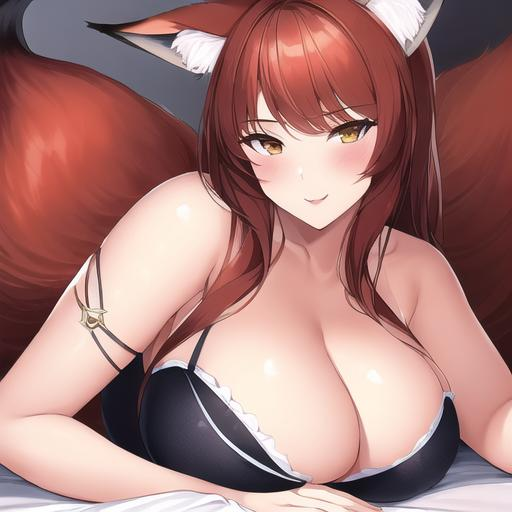
Sacré corps ça c'est sûr, et d'une douceur...
👁️🗨️
Sœurs anthropomorphes (4)
Les Sœurs Anthropomorphes sont des invitées spéciales du directeur lui-même à Haremcia.
Originaires d'une contrée lointaine, leur physique atypique en est la manifestation.
Leur comportement est également empreint d'une grande jovialité et d'optimisme.
 Des furrys venant d'un village lointain
Des furrys venant d'un village lointain
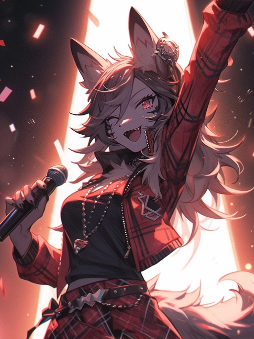
Des furrys venant d'un village lointain
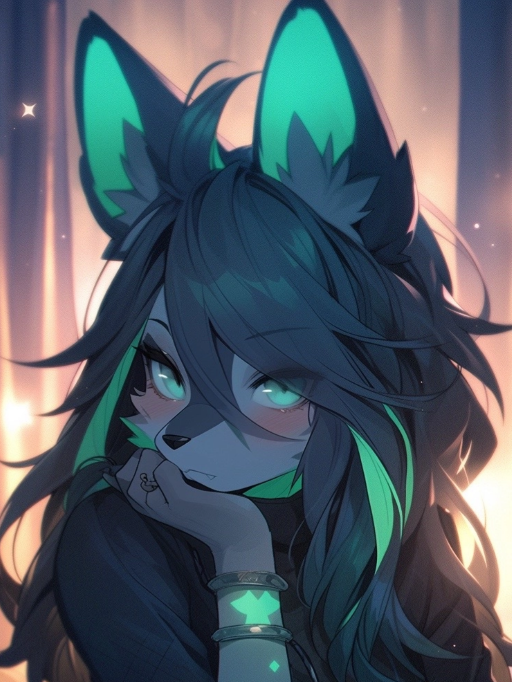
Des furrys venant d'un village lointain
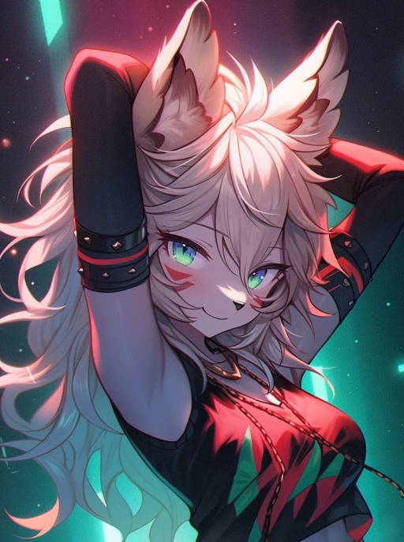
Des furrys venant d'un village lointain
Cuisinières (2)
Les cuisinières exercent leurs talents au sein du manoir impérial, consacrant leurs journées à la préparation de mets extraordinaires pour le couple impérial et leurs invités.
Elles officient dans des cuisines luxueuses, dotées néanmoins d'un certain cachet rustique.
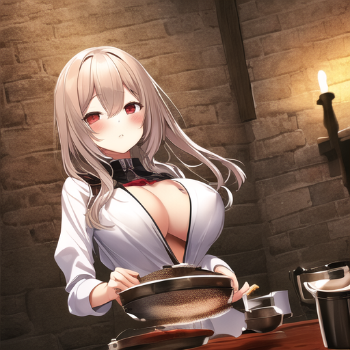
Cuisinière principale du Manoir
 Cuisinière secondaire du Manoir
Cuisinière secondaire du Manoir